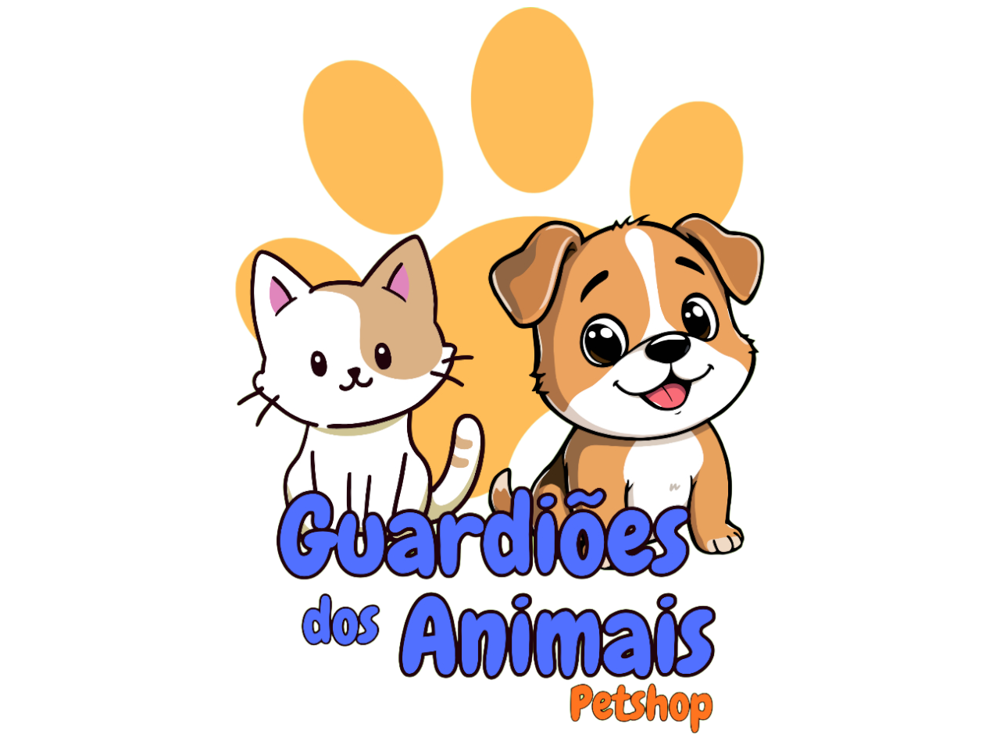

Sistema desenvolvido pelo grupo: Os Guardiões Dos Animais.
Animais Cadastrados
20
Serviços Agendados
5
🐾 Bem-vindo ao sistema! Clique nos botões abaixo.
1. Tipos Básicos
2. Exemplo Animais
3. Testar Funções
4. Ver Erros
5. Cadastrar Animal